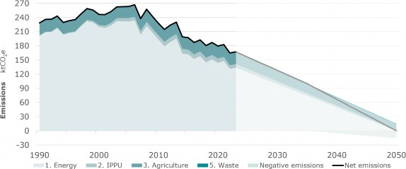
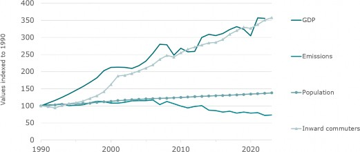
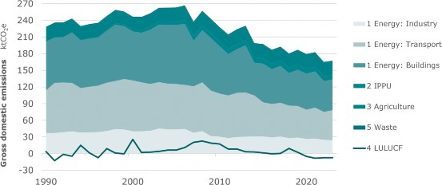

As a party to the Paris Agreement, Liechtenstein is committed to contributing to the global effort to limit global temperature rise to well below 2 °C above pre-industrial levels and to pursue efforts to limit it to below 1.5 °C.
In accordance with Art. 4 of the Paris Agreement, decision 4/CMA.1, the guidance of the Intergovernmental Panel on Climate Change (IPCC) and in recognition of the outcomes of the first Global Stocktake, Liechtenstein is pleased to communicate a strengthened greenhouse gas (GHG) emission reduction target until 2030, a new GHG emission reduction target for 2035 and a new long-term GHG emission reduction target.
Specifically, Liechtenstein aims to achieve the following targets:
By 2030, reduce annual GHG emissions by at least 55% compared to 1990 emission levels;
by 2035, reduce annual GHG emissions by at least 68% compared to 1990 emission levels;
by 2050, achieve net-zero emissions.
To the extent possible, these reductions should be achieved domestically.
The Liechtenstein Parliament adopted the new long-term national Climate Strategy 2050 in 2022 and updated the associated legal acts in 2023. The Climate Strategy 2050 provides an overall vision on the reduction of greenhouse gas emissions in Liechtenstein until the middle of the century, spelling out key areas and related emission reduction targets.
The overall aim for Liechtenstein set out in the Climate Strategy 2050 is to achieve net-zero emissions by the middle of the century. To achieve this, domestic emissions shall be reduced by almost 90% below 1990 levels with the remaining, unavoidable 10% of residual emissions (primarily from agriculture) being offset by negative emissions inside and outside the country.
The Climate Strategy 2050 does not set sectoral targets but gives an indication of the contribution from each sector. The energy sector is responsible for 80% of all emissions. These emissions will need to be completely eliminated, accompanied by strong, but not complete, reductions in agriculture and waste.
The 2050 net-zero target has been included in Liechtenstein's Emissions Trading Act (ETA) since 2021, underscoring Liechtenstein's commitment to achieving net-zero GHG emissions and providing the legal basis required to implement domestic policies necessary to achieve both interim and long-term GHG emission reduction goals.
In its first NDC1, Liechtenstein committed to reducing GHG emissions by 40% below 1990 levels by 2030. In its second NDC this target has significantly increased to 55%, based on the Climate Strategy 2050. According to the ETA, at least 40% of these 55% must be achieved domestically.
The Climate Strategy 2050 set out a possible pathway to achieving net-zero emissions by 2050. In line with this pathway, and the 2030 target described above, Liechtenstein expects to reduce emissions by 68% below 1990 levels by 2035.

Figure 1: Emission reduction pathway as published in Liechtenstein's Climate Strategy 2050.2
Liechtenstein is a small, highly industrialised alpine country of 160 km2 ith just over 41,000 inhabitants3, situated between Switzerland and Austria. Its domestic emissions (excluding LULUCF) stood at 167 ktCO2e in 2023. This corresponds to around 4.18 tCO2eq per capita.
Climate change is accelerating and its devastating impacts are felt around the globe. The northern alps, in which Liechtenstein is situated, have already witnessed an increase in average temperature of more than 2 °C since 1864.4 This has led to a stark reduction of cold weather periods and snowfall in winter as well as a significant increase in days with extreme heat and precipitation. This puts a strain on local infrastructure and presents a significant challenge for the survival of the local winter sport and tourism sector. Drinking water is sourced in large parts from local springs in the mountains and is also under pressure from climate change.
In 2018, the government published its first Adaptation Strategy5 which focusses on five areas of action: securing water supply during droughts, protection from flood risk, increasing resilience of local ecosystems, improving forest stocks, reducing heat stress.
During the last 50 years, Liechtenstein has developed from a mainly agricultural state to one of the most highly industrialised countries in the world. Since 1990, when Liechtenstein started reporting its greenhouse gases, a stark increase in gross domestic product (GDP), inward commuters and population size has been recorded: Liechtenstein's GDP more than tripled from CHF 2 billion in 1990 to CHF 7 billion in 2022, mirrored by a similar trend in the number of daily inward commuters, which has grown from below 7,000 to over 24,000 between 1990 and 2023. The resident population has also grown, but less markedly, from just under 30,000 in 1990 to just over 40,000 in 2023.
Despite this fast economic development, Liechtenstein managed to decouple its economic growth from its GHG emissions. Emissions (excluding LULUCF) peaked in 2006 and have been decreasing steadily since then.

Figure 2: Indexed evolution of gross domestic product and gross emissions showing a decoupling in recent years. Also shown are the development of population and number of inward commuters which are all increasing.6,7
While the modest increase in resident population drives growth in energy use in the residential building and waste sectors, the strong growth in GDP is linked to energy use in industry and non-residential buildings. Increases in energy efficiency and transition to less emission-intensive energy use, especially since 2008, have offset these increases and resulted in decreasing emissions.
Liechtenstein has been active in the fight against climate change for many decades. Liechtenstein is a State party to the Paris Agreement as well as the Kyoto Protocol (including the Doha Amendment), and in 2020 achieved its target of a 20% reduction below 1990 emission levels.
Emissions have decreased significantly since the adoption of the Energy Strategy 2030 and associated measures and legal acts in 2008, as well as the CO2 Act.8 The measures aimed at reducing emissions in the building sector, through subsidies for improved insulation, highly efficient new buildings and a switch to district heat and heat pumps. Incentives were also given directly through a levy on heating and vehicle fuels, and indirectly via the motor vehicle tax system to encourage switching to electric vehicles. Industry and household emissions are targeted by the CO2 Act which stipulates a CO2 price for heating fuels.

Figure 3: Liechtenstein's GHG emissions over time since 1990.8
Despite these successes, a significant reduction effort remains to be undertaken to achieve the goal of net-zero emissions by 2050. These reductions will primarily need to be achieved in the transport, building and industry sectors. GHG emissions in the building sector stem from oil and gas heating systems, these are gradually being replaced by subsidised heat pumps and the expanding district heating network. GHG emissions in transport primarily from individual motorised transport; incentives exist to change to electric vehicles and Liechtenstein's reliable and extensive bus network is being constantly improved and is also being electrified. The revised CO2 Act which took effect in 2025, in cooperation with Switzerland, includes, amongst others, stronger efficiency obligations for vehicle importers.
Liechtenstein supports local innovation and cooperation between the public and private sectors to maximise impacts of climate action. Examples of cooperative efforts include: the LIFE Climate Foundation Liechtenstein, which supports smalls and medium enterprises in their emission reduction efforts and runs public education events; Liechtenstein's membership Reffnet.ch which offers free advice to public and private organisations wanting to reduce their resource use overall, as well as grassroots driven actions to further nature based solutions and improve biodiversity.
|
1 Quantifiable information on the reference point (including, as appropriate, a base year) |
a. Reference year(s), base year(s), reference period(s) or other starting point(s) |
Base year: 1990 |
|
b. Quantifiable information on the reference indicators, their values in the reference year(s), base year(s), reference period(s) or other starting point(s), and, as applicable, in the target year |
Emissions in the base year comprise emissions from all sectors except land use, land use change and forestry. The provisional estimate for these emissions in 1990 is 228.5 ktCO2eq (based on the National Inventory Report from April 2025). The value for the final accounting for the 2030 target will be defined in the inventory submissions covered data up to 2030, expected in 2032. Similarly, accounting for the 2035 target will be done in 2037. Emissions from land use, land use change and forestry are reported in the national GHG inventory but due to the uncertainty in data they are not included in the target. There are no emissions from shipping. The small emissions from aviation (helicopter fuel) are included in the base year and target year emissions. |
|
|
c. For strategies, plans and actions referred to in Article 4, paragraph 6, of the Paris Agreement, or polices and measures as components of nationally determined contributions where paragraph 1(b) above is not applicable, Parties to provide other relevant information |
Not applicable. |
|
|
d. Target relative to the reference indicator, expressed numerically, for example in percentage or amount of reduction |
The 1990 level denotes absolute economy-wide GHG emissions (excluding LULUCF) in 1990. |
|
|
e. Information on sources of data used in quantifying the reference point(s) |
The national inventory report containing data up to the target year will be used to quantify the reference point. |
|
|
f. Information on the circumstances under which the Party may update the values of the reference indicators |
Values of the reference indicators as provided in the national greenhouse gas inventory are subject to recalculations in accordance with UNFCCC decision 18/CMA.1 and continued methodological improvements. Any recalculations are transparently reported in the national inventory document. Final accounting for 2030 will be based on the national inventory document containing data to 2030, expected in 2032. Final accounting for the 2035 target is expected in 2037. |
|
|
2 Time frames and/or periods for implementation |
a. Time frame and/or period for implementation, including start and end date, consistent with any further relevant decision adopted by the Conference of the Parties serving as the meeting of the Parties to the Paris Agreement (CMA) |
2030 target: 1 January 2021 to 31 December 2030 2035 target: 1 January 2031 to 31 December 2035 |
|
b. Whether it is a single-year or multi-year target, as applicable |
Single year targets in 2030 and 2035, respectively. |
|
|
3 Scope and coverage |
a. General description of the target |
Reduce GHG emissions in 2030 by at least 55% below the total national economic sector GHG emissions in 1990 (excluding LULUCF). Reduce GHG emissions in 2035 by at least 68% below the total economy-wide GHG emissions in 1990 (excluding LULUCF). Based on the most recent accounting of 1990 emissions contained in the 2025 national inventory document, this is equivalent to a target of about 103 ktCO2eq in 2030 and 73 ktCO2e in 2035. |
|
b. Sectors, gases, categories and pools covered by the nationally determined contribution, including, as applicable, consistent with Intergovernmental Panel on Climate Change (IPCC) guideline |
Information by sector will be provided in Liechtenstein's national inventory document that is consistent with IPCC guidelines. Sectors covered : Energy; Industrial processes and product use; Agriculture and Waste. Emissions from land use, land use change and forestry are reported in the national GHG inventory, but are not included in the target due to uncertainty. Historically, LULUCF emissions have been estimated to be a small source and sink of <10% of gross emissions. In the last four years reported in the inventory, they have been estimated to be a sink. Gases covered : Carbon dioxide (CO2), methane (CH4), nitrous oxide (N2O), perfluorocarbons (PFCs), hydrofluorocarbons (HFCs), sulphur hexafluoride (SF6). There are no sources of nitrogen trifluoride (NF3). |
|
|
c. How the Party has taken into consideration paragraph 31(c) and (d) of decision 1/CP.21; |
Economy-wide emissions excluding LULUCF, which account for 90-100% of total emissions, are included in the target. The national inventory also estimates emissions from LULUCF. However, emissions in this sector are highly dependent on single events, such as windstorms and are therefore not included. They have been both a source and a sink in the past, but are currently a sink. Although excluded from the target, LULUCF is subject to continued efforts at emissions reductions through Liechtenstein's Forestry Strategy. |
|
|
d. Mitigation co-benefits resulting from Parties' adaptation actions and/or economic diversification plans, including description of specific projects, measures and initiatives of Parties' adaptation actions and/or economic diversification plans |
Not applicable. Liechtenstein's NDC does not consist of mitigation co-benefits of adaptation actions and/or economic diversification plans, and no related methodologies were used. |
|
|
4 Planning processes |
a. Information on the planning processes that the Party undertook to prepare its nationally determined contribution and, if available, on the Party's implementation plans, including, as appropriate: |
|
|
(i) Domestic institutional arrangements, public participation and engagement with local communities and indigenous peoples, in a gender-responsive manner; |
Liechtenstein is a small direct democracy. The Climate Strategy 2050 which formulates the targets communicated here was prepared by Government and was subject to wide public consultation before being approved by Parliament. The targets are enshrined in law through the emissions trading act. The net-zero by 2050 goal as well as the 55% by 2030 goal have already been formally added to this law. Implementation of measures to reduce emissions is driven through a range of different legal acts. The most important ones are:
Other laws, ordinances and strategies cover emissions from agriculture, industrial process emissions and forests. These are regularly re-evaluated. An important formal instrument of the direct democracy of Liechtenstein is the referendum. Within 30 days of the official announcement of the relevant state parliament resolution, at least 1,000 state citizens entitled to vote or at least three municipalities can request a referendum in the form of a unanimous municipal assembly resolution. |
|
|
(ii) Contextual matters, including, inter alia, as appropriate: |
||
|
a) National circumstances, such as geography, climate, economy, sustainable development and poverty eradication |
Please see chapter 3 National context here and Liechtenstein's First Biennial Transparency Report for more details. |
|
|
b) Best practices and experience related to the preparation of the nationally determined contribution |
[See 4. a (i) above] |
|
|
c) Other contextual aspirations and priorities acknowledged when joining the Paris Agreement |
In addition to the Paris Agreement, Liechtenstein is a state party to numerous international environmental agreements including in the fields of climate, biodiversity, chemicals, air, water and protection of species as well as the protection of the Alps. |
|
|
b. Specific information applicable to Parties, including regional economic integration organizations and their member States, that have reached an agreement to act jointly under Article 4, paragraph 2, of the Paris Agreement, including the Parties that agreed to act jointly and the terms of the agreement, in accordance with Article 4, paragraphs 16-18, of the Paris Agreements |
Not applicable. |
|
|
c. How the Party's preparation of its nationally determined contribution has been informed by the outcomes of the global stocktake, in accordance with Article 4, paragraph 9, of the Paris Agreement |
Liechtenstein has noted with concern the findings of the first global stocktake and welcomes decision 1/CMA.5, paragraph 39, which "Encourages Parties to come forward in their next nationally determined contributions with ambitious, economy-wide emission reduction targets, covering all greenhouse gases, sectors and categories and aligned with limiting global warming to 1.5 °C, as informed by the latest science, in the light of different national circumstances." As indicated in chapter 2 and below, Liechtenstein's pathway to achieve net-zero emissions by 2050 has been laid out in the Climate Strategy 2050. Key waypoints and the long-term emissions target until 2050 have been defined in domestic legislation (the ETA). With this, Liechtenstein has set the prerequisites to take credible measures to achieve its GHG emission reduction targets and reaffirms its commitment to contribute appropriately to the global goal of avoiding dangerous anthropogenic interference with the climate system. In this submission, Liechtenstein has increased its 2030 target from 40% to 55% emission reduction below 1990 levels to respond to the increasing urgency to solve the climate crisis. |
|
|
Each Party with a nationally determined contribution under Article 4 of the Paris Agreement that consists of adaptation action and/or economic diversification plans resulting in mitigation co-benefits consistent with Article 4, paragraph 7, of the Paris Agreement to submit information on: |
||
|
(i) How the economic and social consequences of response measures have been considered in developing the nationally determined contribution |
Not applicable. |
|
|
(ii) Specific projects, measures and activities to be implemented to contribute to mitigation co-benefits, including information on adaptation plans that also yield mitigation co-benefits, which may cover, but are not limited to, key sectors, such as energy, resources, water resources, coastal resources, human settlements and urban planning, agriculture and forestry; and economic diversification actions, which may cover, but are not limited to, sectors such as manufacturing and industry, energy and mining, transport and communication, construction, tourism, real estate, agriculture and fisheries |
Not applicable. |
|
|
5 Assumptions and methodological approaches, including those for estimating and accounting for anthropogenic greenhouse gas emissions and, as appropriate, removals |
a. Assumptions and methodological approaches used for accounting for anthropogenic greenhouse gas emissions and removals corresponding to the Party's nationally determined contribution, consistent with decision 1/CP.21, paragraph 31, and accounting guidance adopted by the CMA |
The accounting for Liechtenstein's nationally determined contribution is based on the national greenhouse gas inventory and thus uses the same data sources, assumptions and methodologies as the national inventory document. The methodologies used aim to ensure transparency, accuracy, completeness, consistency and comparability as far as can be achieved and to avoid any double counting of emissions and removals, consistent with decisions 4/CMA.1 and 18/CMA.1. Final accounting towards Liechtenstein's 2030 target is expected to take place by 2032 after publication of Liechtenstein's national inventory document for 2030. Any use of internationally transferred mitigation outcomes will be included in Liechtenstein's final accounting. Similarly, final accounting towards Liechtenstein's 2035 target is expected to take place by 2037. |
|
b. Assumptions and methodological approaches used for accounting for the implementation of policies and measures or strategies in the nationally determined contribution |
Not applicable. Liechtenstein's second NDC is an economy-wide absolute reduction in greenhouse gas emissions. |
|
|
c. If applicable, information on how the Party will take into account existing methods and guidance under the Convention to account for anthropogenic emissions and removals, in accordance with Article 4, paragraph 14, of the Paris Agreement, as appropriate |
See 5 d. below. To reduce uncertainty around extrapolated management practices and similar parameters affecting the calculation of reference levels, Liechtenstein is using net accounting of emissions and removals in the LULUCF sector from 2021 onwards. |
|
|
d. IPCC methodologies and metrics used for estimating anthropogenic greenhouse gas emissions and removals |
Methodologies:
Metrics: 100-yr GWP values from 5th IPCC assessment report, or from a subsequent IPCC assessment report as agreed upon by the CMA, as per UNFCCC decision 18/CMA.1 paragraph 37. |
|
|
e. Sector-, category- or activity-specific assumptions, methodologies and approaches consistent with IPCC guidance, as appropriate, including, as applicable: |
||
|
(i) Approach to addressing emissions and subsequent removals from natural disturbances on managed lands |
Not applicable. LULUCF categories are excluded from the target. |
|
|
(ii) Approach used to account for emissions and removals from harvested wood products |
Not applicable. LULUCF categories are excluded from the target. |
|
|
(iii) Approach used to address the effects of age-class structure in forests |
Not applicable. LULUCF categories are excluded from the target. |
|
|
f. Other assumptions and methodological approaches used for understanding the nationally determined contribution and, if applicable, estimating corresponding emissions and removals, including: |
||
|
(i) How the reference indicators, baseline(s) and/or reference level(s), including, where applicable, sector-, category- or activity-specific reference levels, are constructed, including, for example, key parameters, assumptions, definitions, methodologies, data sources and models used |
Emission reduction targets are defined relative to a reference indicator. The reference indicator corresponds to total emissions excluding LULUCF as reported in the greenhouse gas inventory. |
|
|
(ii) For Parties with nationally determined contributions that contain non-greenhouse-gas components, information on assumptions and methodological approaches used in relation to those components, as applicable |
Not applicable. |
|
|
(iii) For climate forcers included in nationally determined contributions not covered by IPCC guidelines, information on how the climate forcers are estimated |
Not applicable. |
|
|
(iv) Further technical information, as necessary |
Not applicable. |
|
|
g. The intention to use voluntary cooperation under Article 6 of the Paris Agreement, if applicable |
Liechtenstein continues to explore the possible use of internationally transferred mitigation outcomes (ITMOs) from cooperation under Article 6. For 2030, the ETA directly limits the maximum amount of GHG emission reductions achieved through ITMOs to 15% of the 55% emission reduction target. The percentage of domestic emission reductions allowable for 2035 is still to be determined. Liechtenstein will implement all relevant Article 6 guidance adopted by the conference of the Parties serving as the meeting of the Parties to the Paris Agreement (CMA), to apply robust rules that avoid any form of double counting, ensure environmental and social integrity and promote sustainable development, including the protection of human rights. The Liechtenstein Government has decided in 2023 to realise ITMOs primarily through bilateral agreements, based on Article°6.2 of the Paris Agreement. Respective negotiations are ongoing. |
|
|
6 How the Party considers that its nationally determined contribution is fair and ambitious in the light of its national circumstances |
a. How the Party considers that its nationally determined contribution is fair and ambitious in the light of its national circumstances |
Liechtenstein realises the urgency of the climate crisis based on the latest available science as per the reports of the IPCC and is committed to contribute appropriately to the collective goals of the Paris Agreement. Liechtenstein has continuously increased its targets and considers these to be ambitious while being achievable. By virtue of the Customs Treaty and many additional bilateral treaties with Switzerland and through membership in the European Economic Area, Liechtenstein is highly integrated in both the Swiss and the European economies. In light of this integration, Liechtenstein sees its NDC in a wider context of a Europe-wide effort to achieve tangible GHG emission reductions. As a small country, Liechtenstein is heavily dependent on trade. As such, Liechtenstein considers international cooperation to build capabilities for low-carbon and climate-resilient development in all countries vital in addressing climate change. Advancing Liechtenstein's climate policies while ensuring competitiveness of its economic actors is essential. Liechtenstein acknowledges that mitigation measures are binding resources. As a high-income country, Liechtenstein can invest in carbon-efficient technologies. Capacity must be taken into consideration under the fairness consideration. Liechtenstein has already achieved a decoupling of its emissions from its growth with emissions declining since 1990 despite a growing economy (1990-2022: +260 percent) and population (1990-2023: +38%percent). |
|
b. Fairness considerations, including reflecting on equity; |
Liechtenstein's second NDC reflects the trajectory of Liechtenstein's net zero target for 2050. The net zero target has been broadly welcomed by business and civil society stakeholders in Liechtenstein during public consultations of the Climate Strategy 2050. In the context of equity, Liechtenstein would like to highlight the following aspects:
However, Liechtenstein is of the understanding that all countries, including low emitters, need to demonstrate leadership and set emission reduction targets in line with a 1.5 degrees Celsius pathway. Countries with significant economic capacity, meaning higher GDP per capita, should make significant contributions to climate action. |
|
|
c. How the Party has addressed Article 4, paragraph 3, of the Paris Agreement |
Article 4, paragraph 3 of the Paris Agreement provides that each Party's NDC will present a progression beyond the Party's first NDC and reflect its highest possible ambition. Liechtenstein's second NDC reflects a progression beyond its first NDC in several areas: Strengthened 2030 emissions target Liechtenstein's first NDC communicated a target of 40% below 1990 emission levels by 2030. With its second NDC Liechtenstein has increased this target by more than a third for the same time frame. This target has been defined in domestic law. New net-zero by 2050 target Since submission of its first NDC, Liechtenstein has set a long-term target of achieving net zero emissions by 2050 in its domestic legislation. New 2035 target Based on its Climate Strategy 2050, Liechtenstein is communicating a new target for 2035 for the first time in this second NDC. Liechtenstein aims to achieve a 68% reduction below 1990 levels by 2035. Strengthened legislative framework Since submission of its first NDC, Liechtenstein has implemented or strengthened several legislative acts driving climate action. See 4. a. (i) above for a brief summary or Liechtenstein's 1st Biennial Transparency Report for full details. |
|
|
d. How the Party has addressed Article 4, paragraph 4, of the Paris Agreement |
Article 4, paragraph 4 of the Paris Agreement provides that developed country Parties should continue taking the lead by undertaking economy-wide absolute emission reduction targets. In line with this article, Liechtenstein has set absolute emission reduction target covering all sectors. LULUCF is excluded due to uncertainty in underlying data but is currently a sink. |
|
|
e. How the Party has addressed Article 4, paragraph 6, of the Paris Agreement |
Not applicable. |
|
|
7 How the nationally determined contribution contributes towards achieving the objective of the Convention as set out in its Article 2 |
a. How the nationally determined contribution contributes towards achieving the objective of the Convention as set out in its Article 2; |
Liechtenstein's NDC represents its contribution to the objectives of Article 2 of the Convention to stabilise GHG concentrations in the atmosphere. |
|
b. How the nationally determined contribution contributes towards Article 2, paragraph 1(a), and Article 4, paragraph 1, of the Paris Agreement |
Liechtenstein considers its NDC to be consistent with the Paris Agreement and its long-term temperature goal as set out in Article 2, paragraph 1(a). See 6 a. and 6 b. for more information. Article 4, paragraph 1 of the Paris Agreement provides that global emissions must peak as soon as possible followed by rapid reductions thereafter. Liechtenstein's emissions (excluding LULUCF) peaked in 2006 and have been declining since then. |
|